Code
library(tidyverse)
theme_set(theme_minimal())“To consult a statistician after an experiment is finished is often merely to ask him to conduct a post mortem examination. He can perhaps say what the experiment died of.” – Sir RA Fisher
We consider ANOVA models for data which have, in many cases, been collected using experimental designs. The model provides a quantitative assessment of the treatment effects. The first model we shall consider is the One-Way ANOVA model. The data for these models are used when only one set of treatments is to be compared. Here the set of treatments is called a factor and the various treatments are referred to as the factor levels.
A One-Way ANOVA model is expressed in terms of an overall effect (the overall response mean) and a treatment effect (the average effect for a particular treatment or level on the response variable). The model has the form
fit = overall effect + treatment effect.
The second model we shall consider later is a Two-Way Model. The experiments used to produce these data may be from two sets of treatments (that is, two factors). Again we refer to the treatments for each factor as the levels for each factor. We shall assume that the data are fully balanced in that the same number of observations is obtained for each combination of factor levels. For instance, if factor 1 has 3 levels and factor 2 has 2 levels then the total number of observations must be a multiple of 6.
The computer output for an ANOVA often includes the mean response for each combination of factor levels. These means are often represented as a table with the rows corresponding to the levels of the first factor and the columns corresponding to the levels of the second factor. For convenience we shall refer to the levels of factor 1 as the rows and we shall refer to the levels of factor 2 as the columns. There are two possible Two-Way ANOVA models. The first model assumes that the effects of factors 1 and 2 are independent. The appropriate model is expressed in terms of the overall effect (overall mean), the row effect and the column effect. That is
fit = overall effect + row effect + column effect.
The second Two-Way ANOVA allows for an interaction between the row and column effects. That is
fit = overall effect + row effect + column effect + interaction effect.
Finally we shall consider an Analysis of Covariance (ANCOVA) model. In these experiments paired (\(X\), \(Y\)) measurements are obtained for each observation. \(X\) is the explanatory variable and \(Y\) is the response variable. When there is only one experimental factor the following model is applied,
fit = overall effect + treatment effect + \(X\)-effect.
ANCOVA models are, in essence, a mixture of regression and ANOVA models. For all the above models
observed = fitted + residual.
The residuals are used to test the adequacy of the model fitted as in regression.
As part of a multi-lab study, four fabrics were tested for flammability at the National Bureau of Standards. The burn times in seconds were recorded after a paper tab was ignited on the hem of each fabric. The experimental data are presented below (Table 1; taken from p.496 of Bhattacharyya and Johnson (1977).
library(tidyverse)
theme_set(theme_minimal())download.file(
url = "http://www.massey.ac.nz/~anhsmith/data/fabric.RData",
destfile = "fabric.RData")
load("fabric.RData")dtf <- fabric |> unstack(burntime ~ Fabric)
dtf| Fabric.1 | Fabric.2 | Fabric.3 | Fabric.4 |
|---|---|---|---|
| 17.8 | 11.2 | 11.8 | 14.9 |
| 16.2 | 11.4 | 11.0 | 10.8 |
| 17.5 | 15.8 | 10.0 | 12.8 |
| 17.4 | 10.0 | 9.2 | 10.7 |
| 15.0 | 10.4 | 9.2 | 10.7 |
Note that the response variable \(Y\) is quantitative in that they are measurements of burn times in seconds. The five measurements for each fabric are assumed to be a random sample for all possible burn times for that fabric so that the five readings are true replications.
In this example, each of the four fabrics is replicated the same number of times, namely five, so the experiment is said to be “balanced”. The approaches explained in this section on One-Way ANOVA can easily be extended to unbalanced experiments. This is not the case for Two-Way ANOVA.
Using the same approach as in Chapter 4, we could compare any two fabrics by a \(t\)-test or by considering the confidence interval for the difference in means. With 4 fabrics, there are 6 comparisons which could be made (Fabric 1 vs. Fabric 2 etc.).
How should we proceed? Should we test each of these 6 differences in means? Unfortunately, there is a problem in this procedure. One tends to find too many significant differences between means. There are two reasons for this:
The comparisons are not independent. If one fabric mean happened to be unduly large by chance, every comparison involving that mean would tend to yield a significant (say, at the 5% level) difference with each of the other means.
For one comparison, the 95% confidence level (5% level of the \(t\)-test) would yield a significant difference between the means in about 5% of samples of these two fabrics even if the fabrics responded equally to the flammability test. The more comparisons that are made on pairs of fabrics, the more likely it is that sooner or later some of the difference will appear significant at the 5% level, even when there is no difference between the fabrics. This is true for any statistical test and not just \(t\)-tests. If a number of tests are carried out on the same set of data, eventually some false significant results will be obtained. It has been suggested that if you torture data enough, it will confess, whether or not it is guilty.
One way out of this dilemma is to carry out a single test, an \(F\)-test, which can be thought of as giving an average value of the comparisons between treatments. The way it does this should become clear in the next few sections.
The burn times are plotted in Figure 1 in which the scale on the horizontal axis indicates the number of the fabric. The times for fabrics 2 and 4 appear fairly similar to the times for fabric 3. But the burn times for fabric 1 appear to be higher.
fabric |>
ggplot() +
aes(x = Fabric, y = burntime) +
geom_hline(aes(yintercept = mean(burntime)), alpha = .7) +
geom_point() +
annotate("text",
x = .7,
y = mean(fabric$burntime) + 0.3,
label = "Overall mean",
alpha=.7
) 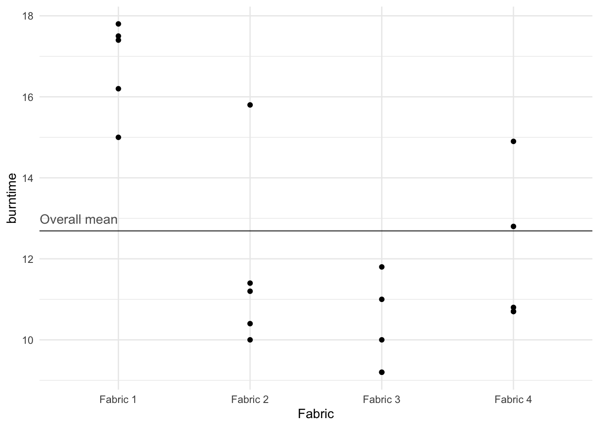
Let \(y_{ij}\) be the \(j^{th}\) observed value in the \(i^{th}\) treatment (fabric type in the above example); \(\bar{y}_{i}\) be the mean of the \(i^{th}\) treatment; \(\bar{y}\) be the overall mean of all the observations; \(k\) is the total number of treatments being compared. As usual the observed data can be modelled by
observed = fit + residual.
However, the appropriate model for the fit is different for these data. For a treatment \(i\) observation
fit =\(\bar{y}_{i}\), the mean of the \(i^{th}\) treatment
or, adding and subtracting \(\bar{y}\) ,
fit =\(\bar{y} + (\bar{y}_{i} - \bar{y})\) =overall mean + treatment effect
Clearly, residual = observed - fit; so the residual for \(y_{ij}\) is equal to
residual = \(y_{ij}-(\bar{y} + (\bar{y}_{i}- \bar{y})) = y_{ij} - \bar{y}_{i}\)
Since observed = fit + residual, we have \[y_{ij} = \bar{y} + (\bar{y}_{i} -\bar{y}) + (y_{ij} - \bar{y}_{i} )\]
observed = overall mean + treatment effect + residual.
That is \[y_{ij} = m + t_{i} + e_{ij}\] where the three terms on the right are:
\(m\) =: the overall mean, \(\bar{y}\),
\(t_{i}\) =: the treatment effect, adjusted for the mean. i.e. (\(\bar{y}_{i} -\bar{y}\)),
\(e_{ij}\) =: the residual or error, (\(y_{ij}\)- \(\bar{y}_{i}\)). See Figure 2 (produced manually) for an illustration of the treatment effect for the fabric data.
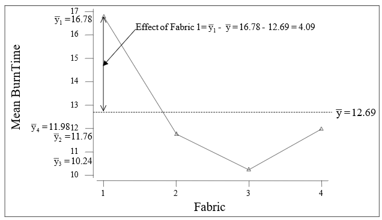
From the above model we obtain the equation \[(y_{ij}-\bar{y}) = (\bar{y}_{i}-\bar{y}) + (y_{ij}- \bar{y}_{i} ).\] It can be shown that the sums of squares follow from this equation if each term is squared and then summed over all the values in the sample. Note, the summation is over both \(i\) and \(j\).
\[\sum _{i,j}\left(y_{ij} -\bar{y}\right)^{2} = \sum _{i,j}\left(\bar{y}_{i} -\bar{y}\right)^{2} + \sum _{i,j}\left(y_{ij} -\bar{y}_{i} \right)^{2}\]
That is, SS TOTAL = SS FACTOR + SS ERROR.
Mean squares (MeanSq or MS) are obtained by dividing the sums of squares (SS) by their respective degrees of freedom (df), as shown below:
| SS | df | MeanSq |
|---|---|---|
| FACTOR | k-1 | FACTOR SS/(n-1) |
| ERROR | n-k | ERROR SS/(n-k |
| TOTAL | n-1 | TOTAL SS/(n-1) |
Finally, the \(F\) statistic for the FACTOR is obtained by dividing the FACTOR MeanSq by the ERROR MeanSq. The associated degrees of freedom are \(k-1\) for the numerator and \(n-k\) for the denominator. We display the SS, MS in the form of a table called the one-way ANOVA table.
For fabric data, the one-way ANOVA R output is shown below.
oneway.model <- aov(burntime ~ Fabric, data = fabric)
summary(oneway.model) Df Sum Sq Mean Sq F value Pr(>F)
Fabric 3 120.50 40.17 13.89 0.000102 ***
Residuals 16 46.26 2.89
---
Signif. codes: 0 '***' 0.001 '**' 0.01 '*' 0.05 '.' 0.1 ' ' 1If there is no real difference between the fabrics, we would expect the \(F\) Statistic to be about 1. If there is a real difference, we would expect the \(F\) statistics to be larger than 1. From tables, the 95th percentile of the \(F\) statistic with 3 and 16 degrees of freedom is 3.24. As our value of 13.89 is more than this, the \(F\) statistic is significant at the 5% level. This is also confirmed by the \(p\)-value, which is 0.000. So there is a significant difference between the mean burning times of the fabrics. This obviously doesn’t mean that all the fabrics differ significantly from each other. It means that there is a significant difference for at least one pair of fabrics.
The individual confidence intervals for the fabric means may be obtained using the pooled error estimate S of 1.7 (the square root of MS Error of 2.891). For example, the confidence interval for the mean burn time of fabric 1 is \(mean \pm t_{error~df, 0.975}\times S\) or \(16.78\pm 2.12\times 1.7\) or (15.17, 18.39).
fabric |>
group_by(Fabric) |>
summarise(
mean = mean(burntime),
sd = sd(burntime),
n = n(),
se = sd / sqrt(n),
ci = qt(0.975, df = n - 1) * se
) |>
ggplot() +
aes(x = Fabric, y = mean, group = factor(1)) +
geom_line() +
geom_point() +
geom_errorbar(aes(ymin = mean - ci,
ymax = mean + ci),
width = .1)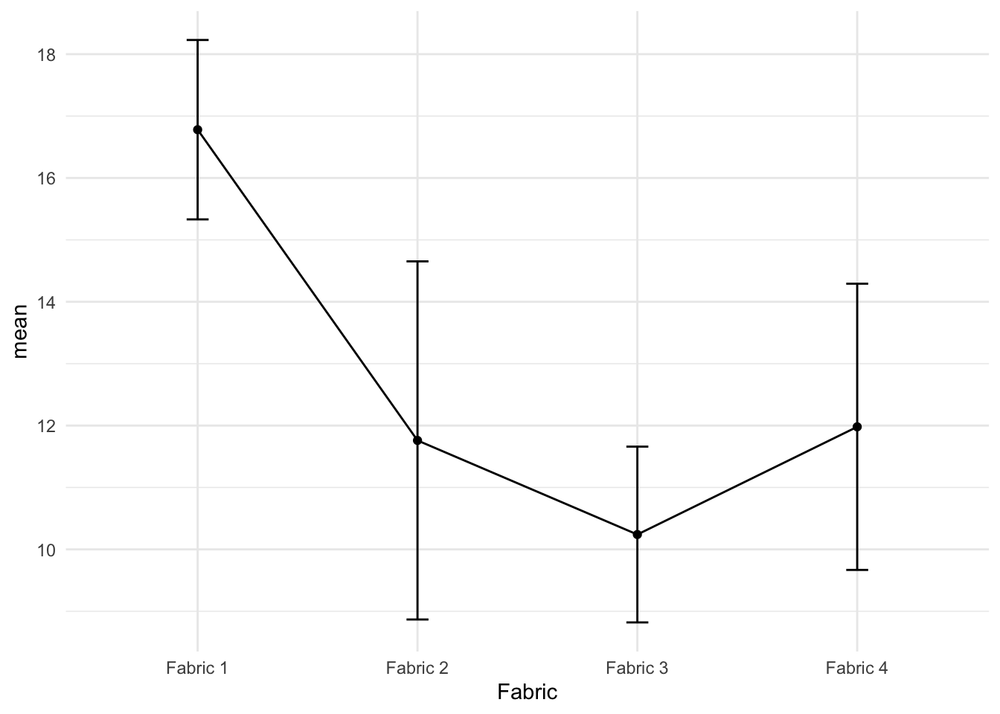
The 95% confidence intervals shown in Figure 3 indicate that fabric 1 differs significantly from the other three fabrics. Note that each CI in the above figure has individual Type I error rate, which makes the overall comparison difficult.
For comparing many treatments, we may perform multiple comparison tests. The following R output shows the adjusted confidence intervals for the difference in fabric means.
TukeyHSD(oneway.model) Tukey multiple comparisons of means
95% family-wise confidence level
Fit: aov(formula = burntime ~ Fabric, data = fabric)
$Fabric
diff lwr upr p adj
Fabric 2-Fabric 1 -5.02 -8.09676 -1.94324 0.0013227
Fabric 3-Fabric 1 -6.54 -9.61676 -3.46324 0.0000851
Fabric 4-Fabric 1 -4.80 -7.87676 -1.72324 0.0019981
Fabric 3-Fabric 2 -1.52 -4.59676 1.55676 0.5094118
Fabric 4-Fabric 2 0.22 -2.85676 3.29676 0.9968426
Fabric 4-Fabric 3 1.74 -1.33676 4.81676 0.3968476This adjustment in constructing the confidence interval for the difference in the treatment means was proposed by Tukey (known as the Tukey’s Honest Significant Difference (HSD)). The idea behind the multiple comparison test proposed Tukey (or by others such as Duncan) is that the error rate is controlled for the family of interval as against individual intervals. We will rely on the software programs to perform such treatment comparisons and obtain plots for multiple comparison; see Figure 4. Note that we used the par() function because the Y-axis labels are bit long.
par(mar=c(5.1, 9, 4.1, 2.1))
plot(TukeyHSD(oneway.model), las=1 , col="brown")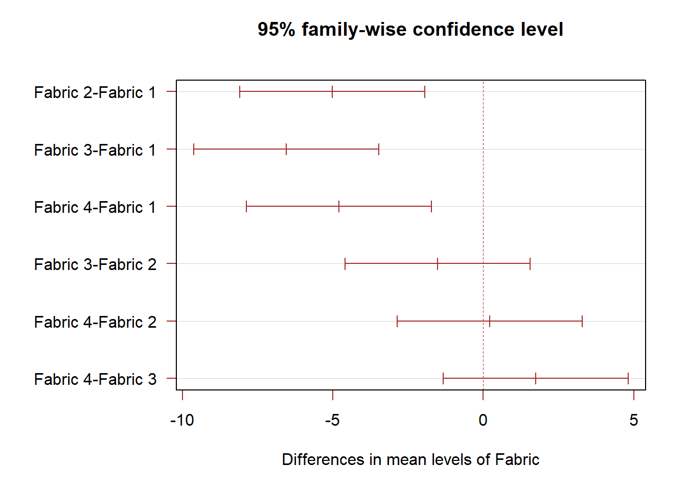
For the one way ANOVA, it is assumed that the burn time variances for each treatment are the same. Although we can never be sure whether assumptions are valid, we can look for indications that the assumptions may not be realistic.
The sample standard deviations of the treatment groups could be plotted against the sample means of the treatment groups. For the fabric example the means and standard deviations of the fabrics are given below.
| summary | Fabric 1 | Fabric 2 | Fabric 3 | Fabric 4 |
|---|---|---|---|---|
| Mean \(\bar {y}_i\) | 16.78 | 11.76 | 10.24 | 11.98 |
| Standard deviation \(S_i\) | 1.167 | 2.330 | 1.144 | 1.862 |
fabric |>
group_by(Fabric) |>
summarise(
mean = mean(burntime),
sd = sd(burntime)
) |>
ggplot() +
aes(x = mean, y = sd, group = factor(1)) +
geom_point() 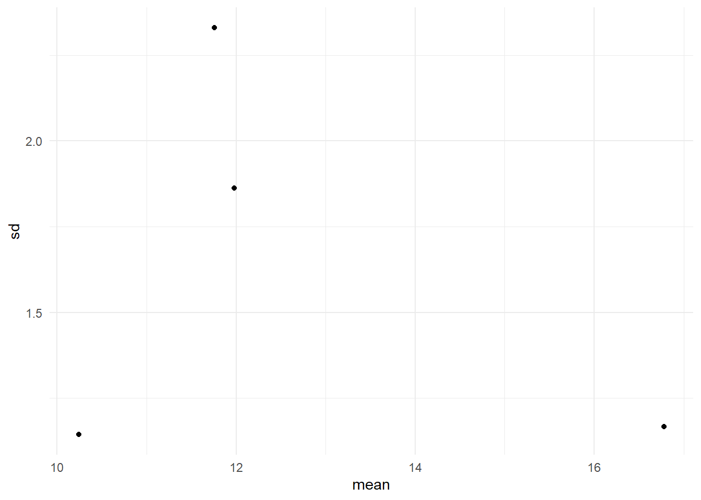
The plot of SD vs. mean is shown in Figure 5. With only four fabrics in the sample, it is difficult to make any definitive claim. If the assumptions were valid, we would expect the four points to fall approximately along a horizontal band indicating constant standard deviations, and hence variances, regardless of the means of the groups. Figure 5 suggests that this is the case, so the assumption of equal variances appears to be valid.
A formal test for equal variances may also be performed. In Bartlett’s test, the null hypothesis of equal variances is tested. This test requires the response variable to be normally distributed where as the alternative test known as the Levene’s test is applicable for any continuous distribution. The \(p\)-value for the Bartlett’s test for the fabric data is 0.447. This suggests that the null hypothesis of equal variances for the four fabric burn times be accepted.
bartlett.test(burntime ~ Fabric, data = fabric)
Bartlett test of homogeneity of variances
data: burntime by Fabric
Bartlett's K-squared = 2.6606, df = 3, p-value = 0.447car::leveneTest(burntime ~ Fabric, data = fabric)Levene's Test for Homogeneity of Variance (center = median)
Df F value Pr(>F)
group 3 0.1788 0.9092
16 If the standard deviations seem to be increasing with the means, a transformation such as the square root or logarithm could be tried. The comments of chapter 4 also apply to the one way ANOVA. However, before performing such a data transformation it is important that the data be checked for outliers. Outliers may inflate the standard deviation for one or more treatments. Such outliers should be checked for accuracy. Even when there is no obvious reason for an outlier, it is probably best to delete such a value if it is obvious that this value is causing a major distortion of the data. This will make our data unbalanced, but that does not matter for one way ANOVA.
The \(F\) statistic is based on the null hypothesis that there is no difference (in the population) between treatment means. As we have noted before, a large value of \(F\) would indicate that the null hypothesis is not valid and that differences between treatments do exist. However, if the variances for the different treatments vary considerably, then this test is no longer valid.
We discuss two-way ANOVA model using the following example. The strength of concrete (\(Y\), measured in MPa) is affected by the type of aggregate (stone, a blocking variable) and the type of cement (the treatment factor) used. An experiment was conducted in order to investigate the effect of aggregate and cement on concrete strength. In all other respects the concrete was the same. That is, same mixing ratios, the same water and the same mixing procedure was used. Ignoring any interaction between aggregate and cement the following model is to be fitted to the data:
fitted = overall effect + aggregate effect + cement effect.
A single testing was done for each cement and each aggregate, producing the balanced set of results shown in Table 2.
concrete <- read_csv("http://www.massey.ac.nz/~anhsmith/data/concrete.txt",
col_types = "dff") # double, factor, factor| Strength | Cement | Aggregate |
|---|---|---|
| 4 | 1 | 1 |
| 5 | 2 | 1 |
| 6 | 3 | 1 |
| 7 | 4 | 1 |
| 10 | 1 | 2 |
| 8 | 2 | 2 |
| 9 | 3 | 2 |
| 10 | 4 | 2 |
| 22 | 1 | 3 |
| 28 | 2 | 3 |
| 34 | 3 | 3 |
| 30 | 4 | 3 |
In Figure 6, the computation of row (cement) and column (Aggregate) effects is explained. Clearly the rows correspond to the four cements and the columns correspond to the three aggregates.

The row effect is taken as the additional row effect after the overall value 14.42 has been fitted. Similarly the column effect is taken as the additional column effect after the overall value has been fitted. Note the following points:
a.: Overall value is the overall mean, 14.42.
b.: The row effect for Row 1 is \(12-14.42 = -2.42\). In other words, the row effect is the row mean minus the overall mean. The column effects are calculated similarly.
c.: The row effects add to zero, although in practice, as in this example, there is some rounding error. Likewise, the column effects add to zero. If the data were not balanced the effects would not necessarily add to zero.
d.: In each cell, fitted values and residuals could be calculated. For example, for cell (1, 1), we obtain the fitted value as \(14.42 + (-2.42) + (-8.92) = 3.08\). Hence, residual = observed-fitted \(= 4-3.08 = 0.92\).
ANOVA tables are a tidy way of writing down the sums of squares, degrees of freedom and mean squares. We are basically concerned with the variation in the dependent variable about its mean and the amount of this variation explained by the explanatory variables, which in this case are the row and column effects. In the SS column in the ANOVA table we break down the total variation according to its source, namely ROWS, COLUMNS and ERROR.

In the ANOVA table, (given as Figure 7) the number of rows is denoted by \(r\) and the number of columns is denoted by \(c\). The Error degrees of freedom are obtained by subtracting the ROW and COLUMN degrees of freedom from the total degrees of freedom. The mean squares are obtained by dividing the sums of squares by their respective degrees of freedom. Note that 118.27 (Mean Square corresponding to Total) is the variance of the original observations.
The R output for the two-way ANOVA fit is given below. The entries relating to TOTAL are not displayed in R.
additive.model <- aov(Strength ~ Cement + Aggregate, data = concrete)
summary(additive.model) Df Sum Sq Mean Sq F value Pr(>F)
Cement 3 34.9 11.6 1.46 0.317
Aggregate 2 1218.2 609.1 76.40 5.39e-05 ***
Residuals 6 47.8 8.0
---
Signif. codes: 0 '***' 0.001 '**' 0.01 '*' 0.05 '.' 0.1 ' ' 1Clearly a large variance (MS) for the rows (Cement) would suggest a significant difference between the Cement-group means and a large variance (MS) for the columns (Aggregate) would suggest a significant difference between the Aggregate-group means.
To test whether a factor has a significant influence, we calculate the \(F\) test statistic. As before, this statistic is the ratio of two mean squares. Hence, to test whether the rows have the same means in the population (i.e., there’s no “row effect”), the \(F\) statistic is \[F = \frac{\text{Row MS}}{\text{Error MS}}\] with the corresponding numerator and denominator degrees of freedom. Likewise, to test whether the columns have the same means in the population (i.e., there’s no “coumn effect”), the \(F\) statistic is \[F = \frac{\text{Column MS}}{\text{Error MS}}\] with the corresponding numerator and denominator degrees of freedom.
To test the significance of the Cement effect, \[F = \frac{11.64}{7.97} = 1.5\] with 3 and 6 d.f. Not significant. To test the significance of the Aggregate effect, \[F = \frac{609.08}{7.97}= 76.4\] with 2 and 6 d.f. Very significant.
These results wouldn’t be surprising to us had we explored the mean concrete strength for the 3 levels of Aggregate and 4 levels of Cement as shown in Figure 8, which are connected by a line, is known as the main effects plot.
p1 <- concrete |>
group_by(Cement) |>
summarise(Mean = mean(Strength)) |>
ggplot() +
aes(y = Mean,
x = Cement) +
geom_point() +
geom_line(aes(group = 1)) +
xlab("Cement") +
ggtitle("Main effects plot of Cement") +
geom_hline(yintercept = mean(concrete$Strength), alpha = .7) +
ylim(5,30)
p2 <- concrete |>
group_by(Aggregate) |>
summarise(Mean = mean(Strength)) |>
ggplot() +
aes(y = Mean,
x = Aggregate) +
geom_point() +
geom_line(aes(group = 1)) +
xlab("Aggregate") +
ggtitle("Main effects plot of Aggregate") +
geom_hline(yintercept = mean(concrete$Strength), alpha = .7) +
ylim(5,30)
gridExtra::grid.arrange(p1, p2, ncol=2)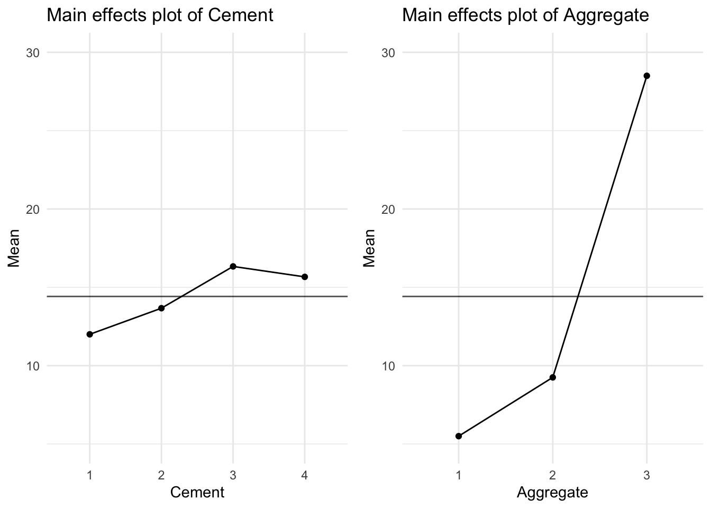
Brook and Arnold (1985) provided the following data from a milk mixing time experiment.
paddle <- tibble(
Speed = c(70, 70, 70, 110, 110, 110, 150, 150, 150,
70, 70, 70, 110, 110, 110, 150, 150, 150) |> factor(),
Diameter = c(90, 120, 150, 90, 120, 150, 90, 120, 150,
90, 120, 150, 90, 120, 150, 90, 120, 150) |> factor(),
MixTime = c(1490,780,825,575,385,315,195,117,225,
1100,620,690,480,385,400,230,190,145)
)
paddle# A tibble: 18 × 3
Speed Diameter MixTime
<fct> <fct> <dbl>
1 70 90 1490
2 70 120 780
3 70 150 825
4 110 90 575
5 110 120 385
6 110 150 315
7 150 90 195
8 150 120 117
9 150 150 225
10 70 90 1100
11 70 120 620
12 70 150 690
13 110 90 480
14 110 120 385
15 110 150 400
16 150 90 230
17 150 120 190
18 150 150 145When whole milk is left standing in a vat, the cream rises to the top, making sampling difficult. A rotating paddle can be used to mix the milk, but too much mixing can damage it. The aim of the experiment was to see how paddle size and speed of rotation affect the optimum mixing time. There were two independent runs at three levels of both speed and paddle size. The data are set out in a two way table in which the rows and columns relate to different speeds and diameters of the paddle. Again, we have balanced data in that the same number of measurements occur in each cell of the table. The experimental data may be treated as separate one way ANOVAs for the Rotational Speed or Paddle Diameter as shown below:
aov(MixTime ~ Speed, data = paddle) |> summary() Df Sum Sq Mean Sq F value Pr(>F)
Speed 2 1680304 840152 21.72 3.72e-05 ***
Residuals 15 580184 38679
---
Signif. codes: 0 '***' 0.001 '**' 0.01 '*' 0.05 '.' 0.1 ' ' 1aov(MixTime ~ Diameter, data = paddle) |> summary() Df Sum Sq Mean Sq F value Pr(>F)
Diameter 2 261871 130936 0.983 0.397
Residuals 15 1998618 133241 Clearly, the rotational speed has more influence than diameter of paddle on optimum mixture time (\(p = 0.000\) for Rotational Speed while \(p = 0.397\) for Paddle Diameter). Note that the true effect of Paddle Diameter may be masked due to the overestimate of the Error under the (incorrect) one-way ANOVA model. The mean mixing time is obviously higher for a Rotational Speed of 70 rpm, whereas Paddle Diameter appears to have a little effect on the mixing time (see Figure 9).
p1 <- paddle |>
group_by(Speed) |>
summarise(mean = mean(MixTime)) |>
ggplot() +
aes(y = mean, x = Speed) +
geom_point() +
geom_path(aes(group = 1)) +
xlab("Speed") +
ggtitle("Main effects plot of Speed") +
geom_hline(yintercept = mean(paddle$MixTime), alpha = .7) +
ylim(150,1000)
p2 <- paddle |>
group_by(Diameter) |>
summarise(mean = mean(MixTime)) |>
ggplot() +
aes(y = mean, x = Diameter) +
geom_point() +
geom_path(aes(group = 1)) +
xlab("Diameter") +
ggtitle("Main effects plot of Diameter") +
geom_hline(yintercept = mean(paddle$MixTime), alpha = .7) +
ylim(150,1000)
gridExtra::grid.arrange(p1, p2, ncol=2)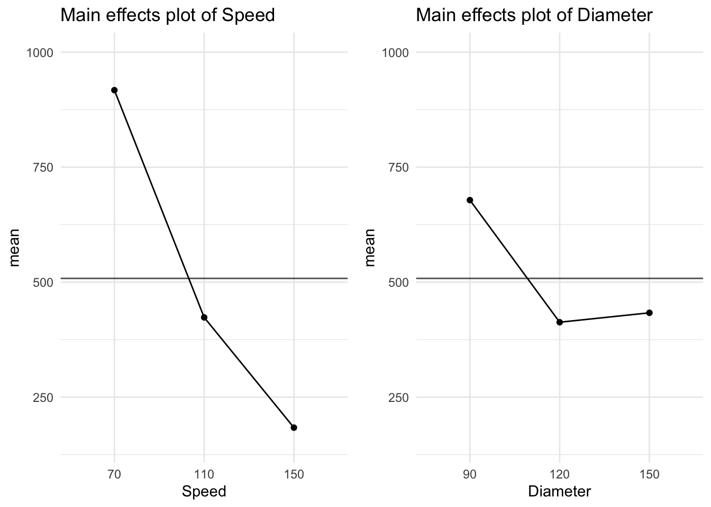
The visreg package is useful for automatically plotting linear models, including ANOVA.
library(visreg)
aovs <- aov(MixTime ~ Speed, data = paddle)
aovd <- aov(MixTime ~ Diameter, data = paddle)
p1 <- aovs |>
visreg(gg=T) +
ylim(10,1200)
p2 <- aovd |>
visreg(gg=T) +
ylim(10,1200)
gridExtra::grid.arrange(p1, p2, ncol=2)Warning: Removed 1 rows containing missing values (`geom_point()`).
Removed 1 rows containing missing values (`geom_point()`).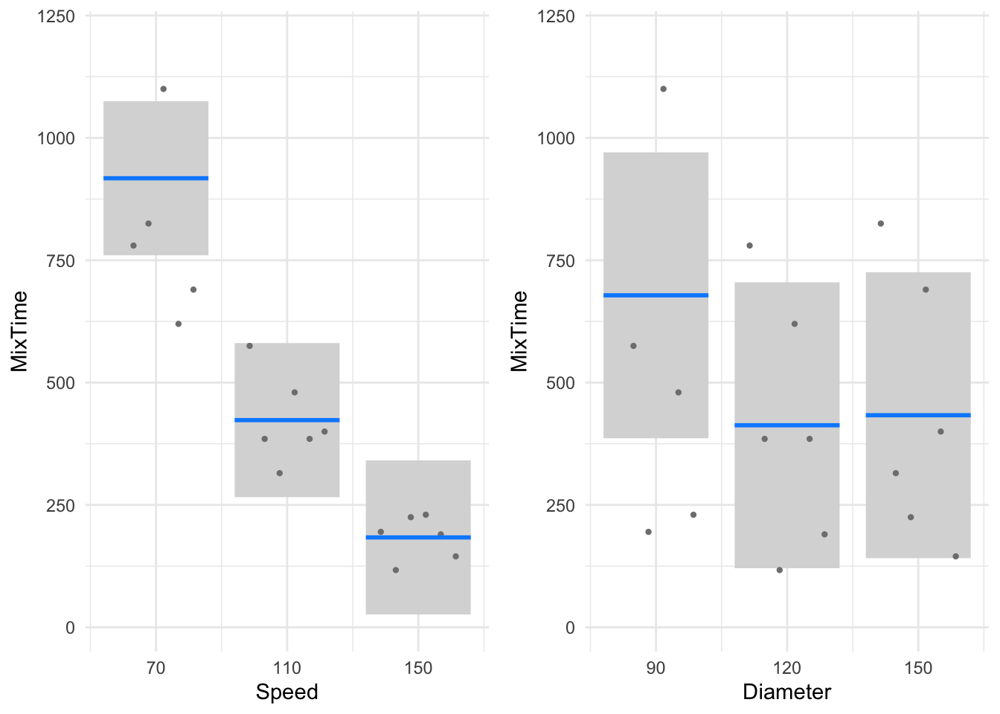
Whether the effect of Speed on mixing time is independent of the paddle diameter or not cannot be explored using the above plot. We can explore interactions graphically using interaction plots, as shown in Figure 10.
pmeans <- paddle |>
group_by(Speed, Diameter) |>
summarise(MixTime = mean(MixTime))
p1 <- pmeans |>
ggplot(aes(Speed, MixTime)) +
geom_line(linewidth = 1, aes(group = Diameter, color = Diameter)) +
geom_point(size = 3, aes(color = Diameter))+
scale_color_brewer(palette="Set1")
p2 <- pmeans |>
ggplot(aes(Diameter, MixTime)) +
geom_line(linewidth = 1, aes(group = Speed, color = Speed)) +
geom_point(size = 3, aes(color = Speed)) +
scale_color_brewer(palette="Set2")
gridExtra::grid.arrange(p1, p2, nrow=2)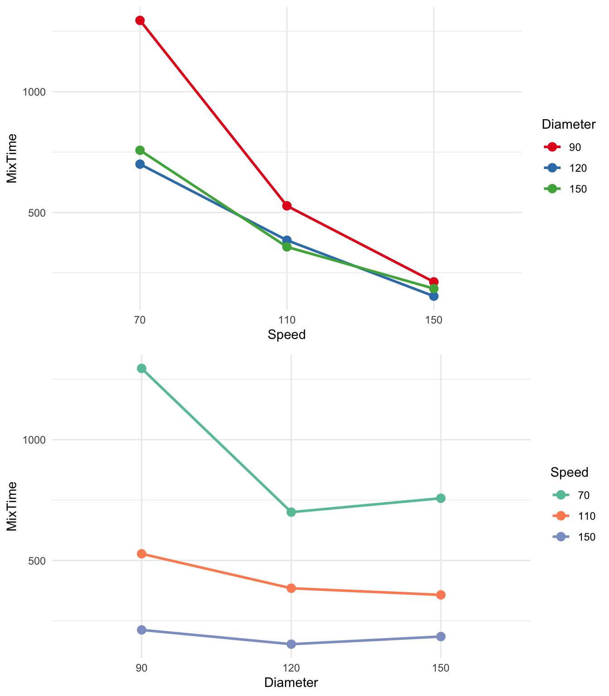
In Figure 10, the mean mixing times have been plotted and connected for all factor level combinations. In the first plot, we’ve put Speed on the x-axis and coloured the points and lines by Diameter, and then swapped the roles. The lines in the interaction plots are not parallel. This suggests that the effect of rotational speed is determined, to some extent, by the effect of paddle diameter (and vice versa). In other words, the effect of rotational speed on mixing time is not the same for the various levels of paddle diameter.
These interaction plots suggest that we should allow for an interaction term in our Two-Way ANOVA model.
A two-way ANOVA interaction model is of the form
fit = overall mean + row effect + column effect + (row\(\times\)column effect).
This model has been fitted to mixing times using R below. Note the syntax * which fits both the interaction and main effect terms.
aovdsx <- aov(MixTime ~ Speed * Diameter, data = paddle)
summary(aovdsx) Df Sum Sq Mean Sq F value Pr(>F)
Speed 2 1680304 840152 67.174 3.89e-06 ***
Diameter 2 261871 130936 10.469 0.00448 **
Speed:Diameter 4 205749 51437 4.113 0.03635 *
Residuals 9 112565 12507
---
Signif. codes: 0 '***' 0.001 '**' 0.01 '*' 0.05 '.' 0.1 ' ' 1With this model object, we can make interaction plots automatically using visreg (Figure 11).
visreg(aovdsx, "Speed", by = "Diameter", gg=T) + theme_bw()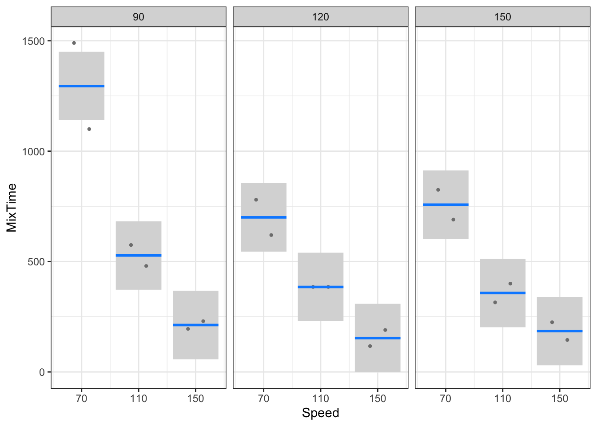
Note that the interaction effect is tested by comparing the interaction (i.e. Speed\(\times\)Diameter) MS against the residual (i.e. Error) MS using an \(F\) statistic with 4 and 9 degrees of freedom (i.e. \(F\) = 4.11). This \(F\)-value exceeds the tabulated value 3.63 at the 5% level, so that this interaction effect is significant at the 5% level (also note that the corresponding \(p\)-value is smaller than 0.05). In other words, there is evidence that the row effects (i.e. Speed effects) are NOT constant over columns (i.e. Diameters), or the column effects are not constant over rows.
The degrees of freedom, d.f., for the numerator, 4, is the product of 2 times 2.
d.f.(rows\(\times\)columns) = d.f.(rows)\(\times\) d.f.(columns)
The error degrees of freedom are obtained by subtraction. That is
d.f.(Error) = d.f.(Total)-d.f.(rows)-d.f.(column)-d.f.(rows\(\times\)columns) \(= (n-1)-(r-1)-(c-1)-(r-1)\times (c-1)= 17- 2-2-4 = 9.\)
If it could be assumed that the interaction between rows and columns was not large, an additive (non-interaction) model could be fitted, namely
observed = fit + residual = (overall mean + row effect + column effect) + e.
Consider the additive ANOVA model fitted below. Note the syntax + which fits only the main effect terms.
aovds <- aov(MixTime ~ Speed + Diameter, data = paddle)
summary(aovds) Df Sum Sq Mean Sq F value Pr(>F)
Speed 2 1680304 840152 34.312 6.51e-06 ***
Diameter 2 261871 130936 5.347 0.0202 *
Residuals 13 318313 24486
---
Signif. codes: 0 '***' 0.001 '**' 0.01 '*' 0.05 '.' 0.1 ' ' 1Notice that the degrees of freedom for the error term in the additive model is the sum of the d.f. for error and interaction. Similarly,
SS (Error) of Additive Model = SS (Interaction) + SS (Error) of Interaction Model.
Notice that if there was only ONE observation in each cell, it would not be possible to test for the significance of an interaction. This is the case with the two-way ANOVA we considered in the previous section (see concrete strength ANOVA output).
The mixtime experimental setup is known as a factorial design where the factor levels are crossed to form the treatments. The treatments are usually completely randomised. When factor levels are quantitative, we can also fit a regression model. The set levels of Speed and Diameter are quantitative. So we can regress the mixing time on the speed and diameter levels. The advantage with this approach is that we will be able to fit a response surface of mixing time so that we can look for optimum settings on some cost or practical grounds. Figure 12 shows the contour plot of the regression (response) surface of mixing time. This plot suggests that both speed and diameter must be set at higher levels in general to reduce the mixing time. But we can choose practically convenient settings such as higher speed but smaller diameter. The curvature in the contour plot is due to the interaction effect but it tends to be smaller at higher speeds. The text by Box, Hunter, and Hunter (2005) contains many examples on using experimental designs for response surface optimisation.
visreg2d(aovdsx, "Speed", "Diameter")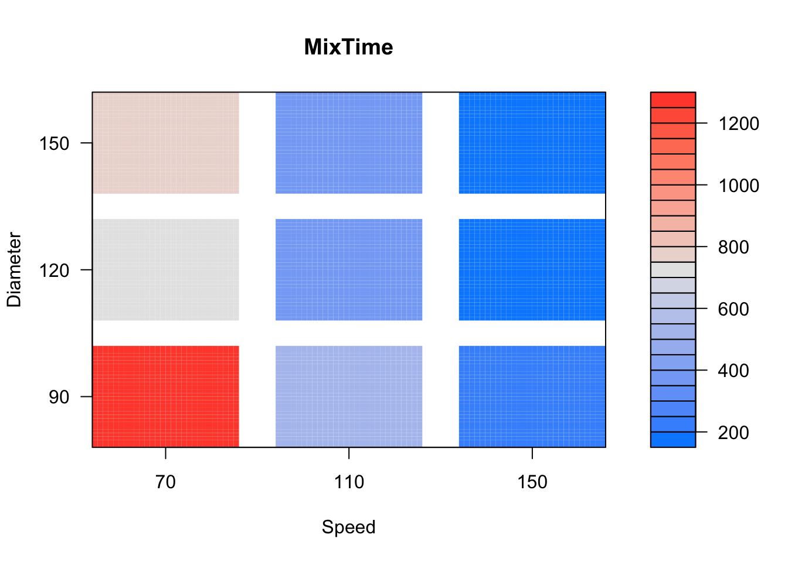
Indicator variable (also known as a dummy or binary variable) is one whose possible values are either 1 or zero. A value of 1 means a particular attribute or characteristic is present and a value of zero means the absence. For example, we may define indicator variables for males and females. Consider- Indicator variable for the male category \[\begin{array}{cccc} I_{\text {male}} & = & 1 & \text{for males}\\ & & 0& \text{for females} \end{array}\]
Indicator variable for the female category \[\begin{array}{cccc} I_{\text{female}} & = & 1 & \text{for females}\\ & & 0& \text{for males} \end{array}\]
In order identify the gender category, we either need either \(I_{male}\) or \(I_{female}\) and not both. This is because for the two gender categories, we have only a single degree of freedom. Using indicator variables, we will be able to include categorical predictors in a regression model. It is also possible to approach the ANOVA test for equality of means through linear regression.
Consider the fabric burn time data discussed earlier. For the four fabric types, we define the following four indicator variables,
\[\begin{array}{cccc} I_1 & = & 1 & \text{for Fabric 1}\\ & & 0& \text{for Fabric 2, 3 and 4} \end{array}\] \[\begin{array}{cccc} I_2 & = & 1 & \text{for Fabric 2}\\ & & 0& \text{for Fabric 1, 3 and 4} \end{array}\] \[\begin{array}{cccc} I_3 & = & 1 & \text{for Fabric 3}\\ & & 0& \text{for Fabric 1, 2 and 4} \end{array}\] \[\begin{array}{cccc} I_4 & = & 1 & \text{for Fabric 4}\\ & & 0& \text{for Fabric 1, 2 and 3} \end{array}\]
Note that we need only any three of the above indicator variables to identify the fabric category. For example, with \(I_1\), \(I_2\), and \(I_3\) variables, fabric 4 is identified when \(I_1 = I_2 = I_3 = 0\). See Table 3.
Let us regress the burn times on the indicator variables \(I_1\), \(I_2\) and \(I_3\).
fabric <- fabric |>
select(burntime, Fabric) |>
mutate(I1 = as.numeric(Fabric=="Fabric 1"),
I2 = as.numeric(Fabric=="Fabric 2"),
I3 = as.numeric(Fabric=="Fabric 3"),
I4 = as.numeric(Fabric=="Fabric 4")
)
fabric| burntime | Fabric | I1 | I2 | I3 | I4 |
|---|---|---|---|---|---|
| 17.8 | Fabric 1 | 1 | 0 | 0 | 0 |
| 16.2 | Fabric 1 | 1 | 0 | 0 | 0 |
| 17.5 | Fabric 1 | 1 | 0 | 0 | 0 |
| 17.4 | Fabric 1 | 1 | 0 | 0 | 0 |
| 15.0 | Fabric 1 | 1 | 0 | 0 | 0 |
| 11.2 | Fabric 2 | 0 | 1 | 0 | 0 |
| 11.4 | Fabric 2 | 0 | 1 | 0 | 0 |
| 15.8 | Fabric 2 | 0 | 1 | 0 | 0 |
| 10.0 | Fabric 2 | 0 | 1 | 0 | 0 |
| 10.4 | Fabric 2 | 0 | 1 | 0 | 0 |
| 11.8 | Fabric 3 | 0 | 0 | 1 | 0 |
| 11.0 | Fabric 3 | 0 | 0 | 1 | 0 |
| 10.0 | Fabric 3 | 0 | 0 | 1 | 0 |
| 9.2 | Fabric 3 | 0 | 0 | 1 | 0 |
| 9.2 | Fabric 3 | 0 | 0 | 1 | 0 |
| 14.9 | Fabric 4 | 0 | 0 | 0 | 1 |
| 10.8 | Fabric 4 | 0 | 0 | 0 | 1 |
| 12.8 | Fabric 4 | 0 | 0 | 0 | 1 |
| 10.7 | Fabric 4 | 0 | 0 | 0 | 1 |
| 10.7 | Fabric 4 | 0 | 0 | 0 | 1 |
mdl <- lm(burntime ~ I1 + I2 + I3, data = fabric)
summary(mdl)
Call:
lm(formula = burntime ~ I1 + I2 + I3, data = fabric)
Residuals:
Min 1Q Median 3Q Max
-1.780 -1.205 -0.460 0.775 4.040
Coefficients:
Estimate Std. Error t value Pr(>|t|)
(Intercept) 11.9800 0.7604 15.754 3.65e-11 ***
I1 4.8000 1.0754 4.463 0.000392 ***
I2 -0.2200 1.0754 -0.205 0.840485
I3 -1.7400 1.0754 -1.618 0.125206
---
Signif. codes: 0 '***' 0.001 '**' 0.01 '*' 0.05 '.' 0.1 ' ' 1
Residual standard error: 1.7 on 16 degrees of freedom
Multiple R-squared: 0.7226, Adjusted R-squared: 0.6706
F-statistic: 13.89 on 3 and 16 DF, p-value: 0.0001016The following points are to be noted on the above regression model:
The \(y\)-intercept 11.98 is the mean burn time of the fourth fabric (i.e. the mean response for the omitted predictor category).
The mean burn time of fabrics 1, 2 and 3 can be found from the fitted model. For fabric 1, \(I_1\) =1, \(I_2\)=0, and \(I_3\) =0. Substituting these values in the fitted model, we get \(11.98 + 4.80\times 1 - 0.22\times 0 - 1.74\times 0 = 12+4.8 = 16.78\), which is mean burn time of fabric 1. For fabric 2, the mean burn time is \(11.98 + 4.80\times 0 - 0.22\times 1 - 1.74\times 0 = 11.76\). For fabric 3, the mean burn time is \(11.98 + 4.80\times 0 - 0.22\times 0 - 1.74\times 1 = 10.24\). In other words, the fitted coefficient of an indicator variable is the difference between the response means of the category indicated by the variable and the ‘base’ category (indicated by the omitted indicator variable).
The significance of the slope coefficients implies a significant difference in means. For example, the coefficient of the indicator variable \(I_1\) is highly significant. This means that the mean burn time of fabric 1 is significantly different from the mean burn time of fabric 4. Note that this is not the case when fabrics 2 and 3 are compared with fabric 4.
In the above output, a multiple comparison of means is made keeping fabric 4 as the base. A comparison of the mean burn time of fabrics 2 & 3 is not possible with the above regression. We need to omit either \(I_2\) or \(I_3\) and fit a regression of burn time on the predictors \(I_1\), \(I_3\), and \(I_4\) or \(I_1\), \(I_2\), and \(I_4\) for such a comparison.
The ANOVA of the regression model is the same as the one-way ANOVA fit (compare F, mean squares etc.)
anova(mdl)Analysis of Variance Table
Response: burntime
Df Sum Sq Mean Sq F value Pr(>F)
I1 1 111.521 111.521 38.5718 1.248e-05 ***
I2 1 1.408 1.408 0.4871 0.4952
I3 1 7.569 7.569 2.6179 0.1252
Residuals 16 46.260 2.891
---
Signif. codes: 0 '***' 0.001 '**' 0.01 '*' 0.05 '.' 0.1 ' ' 1Consider the pine tree data discussed earlier. Let us model the Top circumference (numerical response) using Area variable (which is categorical). A plot of the raw data and mean circumference along with the associated 95% confidence intervals are shown in Figure 13.
download.file(
url = "http://www.massey.ac.nz/~anhsmith/data/pinetree.RData",
destfile = "pinetree.RData")
load("pinetree.RData")pinetree |>
ggplot() +
aes(x = Area, y = Top, color = Area) +
geom_jitter(width = 0.15, height = 0, alpha = .6) +
stat_summary(fun = "mean",
geom = "point",
size = 3,
position = position_nudge(x = 0.3)
) +
stat_summary(fun.data = "mean_cl_normal",
geom = "errorbar",
size = 0.75, width = 0.075,
position = position_nudge(x = 0.3)
) Warning: Using `size` aesthetic for lines was deprecated in ggplot2 3.4.0.
ℹ Please use `linewidth` instead.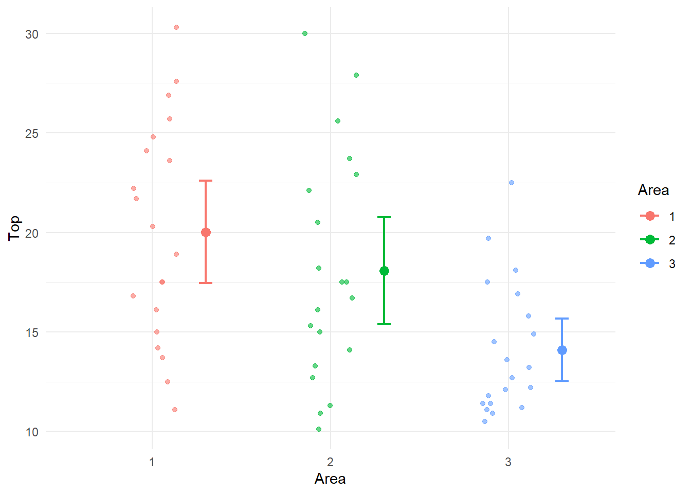
For the three different areas of the forest, we define the following three indicator variables,
\[\begin{array}{cccc} I_1 & = & 1 & \text{for Area 1}\\ & & 0& \text{for Areas 2, and 3} \end{array}\] \[\begin{array}{cccc} I_2 & = & 1 & \text{for Area 2}\\ & & 0& \text{for Areas 1, and 3} \end{array}\] \[\begin{array}{cccc} I_3 & = & 1 & \text{for Area 3}\\ & & 0& \text{for Areas 1, and 2} \end{array}\]
Note that we need only any three of the above indicator variables to identify the Area category. For example, with \(I_1\) and \(I_2\) variables, Area 3 is identified when \(I_1 = I_2 = 0\).
Let us regress the pine tree Top circumference on the indicator variables \(I_2\) and \(I_3\) using the following R codes.
pinetree1 <- pinetree |>
select(Area, Top) |>
mutate(I1 = as.numeric(Area == "1"),
I2 = as.numeric(Area == "2"),
I3 = as.numeric(Area == "3") )
mdl <- lm(Top ~ I2 + I3, data = pinetree1)
library(broom)
tidy(mdl)pinetree1 <- pinetree |>
select(Top, Area) |>
mutate(I1 = as.numeric(Area == "1"),
I2 = as.numeric(Area == "2"),
I3 = as.numeric(Area == "3") )
mdl <- lm(Top ~ I2 + I3, data = pinetree1)
tidy(mdl)| term | estimate | std.error | statistic | p.value |
|---|---|---|---|---|
| (Intercept) | 20.025 | 1.11375 | 17.979805 | 0.0000000 |
| I2 | -1.955 | 1.57508 | -1.241207 | 0.2196132 |
| I3 | -5.925 | 1.57508 | -3.761714 | 0.0004002 |
The following points are to be noted on the regression model shown in Table 4:
The \(y\)-intercept 20.025 is the mean Top circumference for Area 1 (i.e. the mean response for the omitted predictor category).
The mean Top circumference 2 and 3 can be found from the fitted model. For Area 2, \(I_1\) =0, \(I_2\)=1, and \(I_3\) =0. Substituting these values in the fitted model, we get \(20.025 -1.955 \times 1 -5.925 \times 0 = 20.025-1.955 = 18.07\), which is mean Top circumference for Area 1. For Area 3, the mean Top circumference for Area 3 is \(20.025 -1.955 \times 0 -5.925 \times 1 = 20.025= 14.1\). In other words, the fitted coefficient of an indicator variable is the difference between the response means of the category indicated by the variable and the ‘base’ category (indicated by the omitted indicator variable).
The significance of the slope coefficients implies a significant difference in means. For example, the coefficient of the indicator variable \(I_2\) is highly significant. This means that the mean Top circumference for Area 2 is significantly different from the mean Top circumference for Area 1. The negative sign of the coefficient means that Area 2 mean is significantly lower when compared Area 1 mean. The same is true when Area 3 is compared with Area 1.
In the above output, a multiple comparison of means is made keeping Area 1 as the base. A comparison of the mean Top circumference for Areas 2 & 3 is not possible with the above regression. We need to omit either \(I_2\) or \(I_3\) and fit a regression for such a comparison.
In practice, you will NOT be creating any indicator variables to perform the analysis and R does it for us when we use the lm() function but we have to make sure that categorical factors are stored as factors, not numerical variables.
The ANOVA of the regression model shown in Table 5 has a highly significant F value which means that at least one Area is different in terms of mean Top circumference.
lm(Top ~ Area, data=pinetree) |> anova()| Df | Sum Sq | Mean Sq | F value | Pr(>F) | |
|---|---|---|---|---|---|
| Area | 2 | 364.5903 | 182.29517 | 7.348015 | 0.0014482 |
| Residuals | 57 | 1414.0995 | 24.80876 | NA | NA |
Indicator variables are particular useful when both a dependent variable and an independent variable are measured. One would like to use regression to show the relationship between the dependent or response variable and the explanatory variable (covariate) separately for each factor level. However, both the slope and the intercept may differ for the various factor levels. What sort of model does one fit to such data? Consider the Restaurant Sales Data presented in the first four columns of Table 6. This dataset is from Neter and Whitmore (1993).
A study for a chain of fast-food restaurants examined the relationship between restaurant sales (\(Y\), in thousands of dollars) and the number of households in the restaurant’s trading area (\(X\), in thousands) and location of restaurant (Highway, shopping Mall, Street).
restaurant <-
read_table("http://www.massey.ac.nz/~anhsmith/data/restaurant.txt",
col_types = "fddf") |>
mutate(Restaurant = factor(Restaurant),
I1 = as.numeric(Location=="Mall"),
I2 = as.numeric(Location=="Street"),
I3 = as.numeric(Location=="Highway"),
I1.X = I1 * Sales,
I2.X = I2 * Sales)
restaurant| Restaurant | Sales | Households | Location | I1 | I2 | I3 | I1.X | I2.X |
|---|---|---|---|---|---|---|---|---|
| 1 | 135.27 | 155 | Highway | 0 | 0 | 1 | 0.00 | 0.00 |
| 2 | 72.74 | 93 | Highway | 0 | 0 | 1 | 0.00 | 0.00 |
| 3 | 114.95 | 128 | Highway | 0 | 0 | 1 | 0.00 | 0.00 |
| 4 | 102.93 | 114 | Highway | 0 | 0 | 1 | 0.00 | 0.00 |
| 5 | 131.77 | 158 | Highway | 0 | 0 | 1 | 0.00 | 0.00 |
| 6 | 160.91 | 183 | Highway | 0 | 0 | 1 | 0.00 | 0.00 |
| 7 | 179.86 | 178 | Mall | 1 | 0 | 0 | 179.86 | 0.00 |
| 8 | 220.14 | 215 | Mall | 1 | 0 | 0 | 220.14 | 0.00 |
| 9 | 179.64 | 172 | Mall | 1 | 0 | 0 | 179.64 | 0.00 |
| 10 | 185.92 | 197 | Mall | 1 | 0 | 0 | 185.92 | 0.00 |
| 11 | 207.82 | 207 | Mall | 1 | 0 | 0 | 207.82 | 0.00 |
| 12 | 113.51 | 95 | Mall | 1 | 0 | 0 | 113.51 | 0.00 |
| 13 | 203.98 | 224 | Street | 0 | 1 | 0 | 0.00 | 203.98 |
| 14 | 174.48 | 199 | Street | 0 | 1 | 0 | 0.00 | 174.48 |
| 15 | 220.43 | 240 | Street | 0 | 1 | 0 | 0.00 | 220.43 |
| 16 | 93.19 | 100 | Street | 0 | 1 | 0 | 0.00 | 93.19 |
Table 6 also shows the indicator variables for the Location factor. Just two indicator variables (say \(I_1\) and \(I_2\)) are needed in order to define the three different locations uniquely. In order to permit a separate line for each location we need a model of the following form
\[Y = \beta_0 + \beta_1 I_1 + \beta_2 I_2 + (\beta_3 + \beta_4 I_1 + \beta_5 I_2)X\]
This model provides a separate model for each location as well as allows for the interaction between the location of the restaurant and the number of households through the slope coefficients.
For Highway locations, \(I_1\) and \(I_2\) are both equal to zero. Hence the model simplifies to \(Y = \beta_0 + (\beta_3)X\). For Mall locations, \(I_1\) is equal to one and \(I_2\) is equal to zero. So the model becomes \(Y = (\beta_0 + \beta_1 ) + (\beta_3 + \beta_4)X\). For Street locations, \(I_1\) is equal to zero and \(I_2\) is equal to one. So the model becomes \(Y = (\beta_0 + \beta_2 ) + (\beta_3 + \beta_5)X\).
The newly created product variables \(I_1.X=I_1\times X\) and \(I_2.X=I_2\times X\) shown in Table 6 allow us to fit separate slopes for the Locations. R does not require creation of data for the interaction terms \(I_1\)\(\times X\) and \(I_2\)\(\times X\) and it does internally. The regression of Sales \((Y)\) on Households \((X)\), \(I_1\), \(I_2\), \(I_1\times X\) and \(I_2\times X\) is shown in Table 7.
ancova.model <- lm(Sales ~ Households + I1 + I2 + I1.X + I2.X,
data=restaurant)
tidy(ancova.model)| term | estimate | std.error | statistic | p.value |
|---|---|---|---|---|
| (Intercept) | 1.491 | 11.688 | 0.128 | 0.901 |
| Households | 0.854 | 0.082 | 10.370 | 0.000 |
| I1 | 26.588 | 19.999 | 1.329 | 0.213 |
| I2 | -0.597 | 16.447 | -0.036 | 0.972 |
| I1.X | 0.009 | 0.122 | 0.074 | 0.942 |
| I2.X | 0.053 | 0.111 | 0.479 | 0.642 |
This R output suggests that the coefficients for \(I_2\), \(I_1\times X\) and \(I_2\times X\) are not significantly different from zero. This suggests that a simpler model can be fitted to these data omitting the category indicated by \(I_2\). The significance of the \(I_1\) coefficient means that the \(y\)-intercept of the model for Mall location is different. The significance of the coefficients of the product variables will imply significant differences in slopes for the locations but this is not the case here. In general, a stepwise regression is needed to obtain a simpler model having the best subset of predictors (rather than judging from the multiple regression model given here).
The final or simpler model suggested after step-wise analysis (results not shown) is:
\(Y = -3.298 + 0.906 X + 23.8\times I_1\).
Because \(I_2\) does not appear in this equation, it means that the same regression line can be used to relate sales to number of households for the Highway and Street Locations. The fact that \(I_1\) is included in the final model but \(I_1\)\(\times X\) is excluded means that the line for Malls has a different intercept but the same slope as the Highway/Street Line.
\(I_1\)=0 for both Highway and Street locations so the fitted values for Highway/Street locations is,
\(Y = -3.298 + 0.906 X\).
\(I_1\)=1 for Mall locations so the fitted model for Mall locations is,
\(Y = (-3.298 + 23.81) + (0.906-0.074)X = 20.512 + 0.832X\).
These two lines are plotted in Figure 14. The top line is (obviously) the fitted model for Mall locations and the bottom one for Highway and Street locations.
restaurant |>
mutate(`Mall location` = Location == "Mall") |>
ggplot() +
aes(y = Sales, x = Households, linetype = `Mall location`) +
geom_point(aes(shape = Location)) +
geom_smooth(method = lm)`geom_smooth()` using formula = 'y ~ x'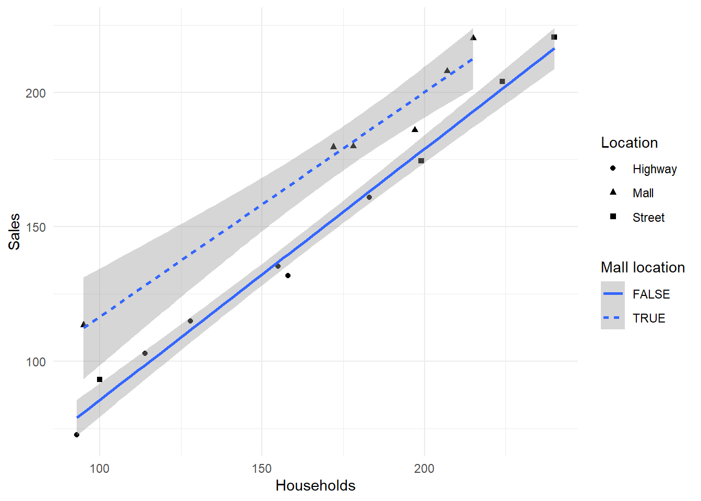
In practice, you will NOT be creating any indicator variables to perform the analysis of covariance and R does it for us when we use the lm() with the syntax * which stands for interaction. Try-
mdl <- lm(Top ~ First * Area, data = pinetree)
tidy(mdl) # also summary(mdl) or anova(mdl)Various ANOVA models have been considered in this chapter. The goodness of fit is indicated by the \(R\)-Squared value or \(F\) statistic. Most of the ANOVA examples given in this chapter are based on experimental data but ANOVA models can also be fitted to survey data, provided that the observations represent a random sample. When the observations are time series or other data forms chosen in a non-random fashion, the assumptions of these models may not be satisfied. In particular it is unlikely that the residuals will be independent, following no clear pattern. It is important that such assumptions be checked; otherwise the results of these analyses may be misleading. It is also important that the residual variances are reasonably similar for all treatment levels. If this is not the case, some transformation of the response variable may be required in order to ensure that the ANOVA \(F\) tests are valid.
Indicator variables can be used to perform ANOVA using regression. However, it is more common to use indicator variables when one wants to use both a categorical factor and a continuous measurement variable \(X\) to model the \(Y\) responses. Such an analysis is called an ANCOVA and the model fitted using regression may consist of a separate model for each treatment.